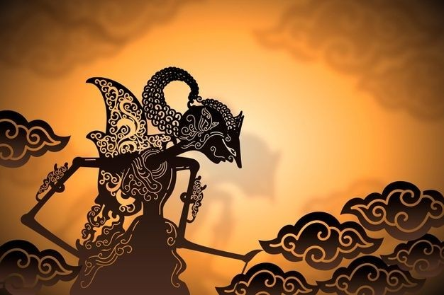

Penyebaran agama dan kebudayaan Hindu-Buddha di Nusantara berlangsung dari abad I hingga XV, meninggalkan pengaruh yang kuat.
Peninggalannya meliputi benda fisik dan nilai budaya nonfisik yang masih ditemukan hingga kini.
1. Bahasa dan Tulisan
Kebudayaan Hindu dari India memperkenalkan budaya tulis di Nusantara melalui bahasa Sanskerta dan huruf Pallawa,
yang berkembang menjadi aksara lokal seperti Kawi, Jawa Kuno, dan Bali Kuno. Bahasa Sanskerta umumnya digunakan dalam
lingkungan istana dan upacara keagamaan, sementara huruf Pallawa meluas dalam berbagai tulisan lokal. Bukti awal tulisan ini
adalah yupa abad IV di Kutai, Kalimantan Timur.
A. Prasasti
Prasasti adalah dokumen tertulis pada bahan tahan lama yang memuat informasi sejarah dan dianggap sebagai sumber penting
karena memberikan catatan kronologis suatu peristiwa. Prasasti berisi penanggalan, nama tokoh, dan alasan dibuatnya prasasti,
seringkali menggunakan huruf Pallawa. Selain batu, prasasti juga ditulis di lempengan logam, daun lontar, daluang, dan kain.
B. Kitab
Pengenalan bahasa dan tulisan pada masa Hindu-Buddha memungkinkan pujangga Nusantara menciptakan karya sastra berupa kitab,
yang umumnya ditulis dalam bentuk puisi indah (kakawin) di atas daun lontar. Kitab-kitab ini melalui beberapa tahap perkembangan:
- Mataram Kuno: Kitab Song Hyang Kamahayanikan oleh Sambara Suryawanssa tentang ajaran Buddha Tantrayana.
- Kediri: Karya besar seperti Arjunawiwaha oleh Mpu Kanwa, Kresnayana oleh Mpu Dharmajaya, dan Bharatayuda oleh Mpu Sedah dan Mpu Panuluh.
- Majapahit: Kitab Negarakertagama oleh Mpu Prapanca, Pararaton, dan Bhubukhsan, yang berisi mitos dan kisah spiritual.
C. Manuskrip
Manuskrip adalah naskah tulisan tangan kuno yang memuat berbagai tema seperti kepahlawanan, hukum, dan upacara keagamaan. Contohnya, Pustaha dari Batak ditulis di atas kulit kayu alim dengan aksara Batak, dan I La Galigo dari Sulawesi Selatan yang mengisahkan Kerajaan Luwu menggunakan aksara Bugis. Ada juga manuskrip Lampung di kulit kayu bunut, ditulis dalam aksara Lampung yang berakar dari aksara Pallawa dari India.
5. Seni Bangun, Seni Pahat dan Relief Candi

Sebelum Hindu-Buddha, masyarakat Indonesia menganut animisme dan dinamisme. Hindu-Buddha memperkenalkan candi, dewa-dewi, dan sistem kasta. Candi Hindu biasanya untuk memuliakan dewa, sedangkan candi Buddha untuk menyimpan relik dan sebagai tempat ziarah, seperti Candi Prambanan dan Borobudur. Candi terdiri dari tiga bagian: bhurloka (kehidupan dunia), bhurvaloka (pemurnian jiwa), dan svarloka (alam dewa). Candi di Jawa Tengah berbentuk tambun dengan hiasan kalamakara, sedangkan di Jawa Timur lebih ramping dengan hiasan kala sederhana.
Seni pahat Hindu lebih proporsional, sementara patung Buddha memiliki gestur simbolis (mudra). Hindu-Buddha hidup berdampingan di Nusantara, menghasilkan akulturasi yang memperkaya budaya lokal, termasuk dalam seni gamelan, wayang, bercocok tanam, dan teknologi perahu bercadik.
A. Aksara dan Bahasa

Bangsa India mengenalkan tulisan kepada masyarakat Nusantara melalui aksara Pallawa dan bahasa Sanskerta, memulai era aksara di Indonesia. Tulisan ini tercatat dalam prasasti-prasasti awal seperti Prasasti Kutai, Tarumanagara, Sriwijaya, dan Mataram Kuno. Bahasa Sanskerta kemudian memengaruhi bahasa Kawi (Jawa Kuno) dan bahasa Melayu Kuno, dengan Kawi menyerap banyak kosakata Sanskerta. Setelah runtuhnya Majapahit, bahasa Kawi berkembang di Bali menjadi Kawi-Bali, sementara bahasa Jawa berkembang menjadi Jawa Tengahan dan Jawa Modern. Bahasa Melayu Kuno berkembang di Sumatra dan Jawa pada abad VII-XIII dengan pengaruh Sanskerta yang kuat.
B. Sistem Kepercayaan
Sejak zaman prasejarah, bangsa Indonesia memiliki kepercayaan berupa pemujaan roh nenek moyang dan kekuatan pada benda-benda tertentu. Ketika kebudayaan Hindu-Buddha masuk, terjadi akulturasi. Dalam upacara di candi, unsur pemujaan terhadap roh nenek moyang terlihat dengan adanya tempat penyimpanan benda lambang jasmaniah raja di dalam candi, menjadikannya simbol makam raja yang telah meninggal. Hal ini mirip dengan fungsi menhir, dolmen, dan punden berundak pada zaman Megalitikum. Arca dewa sebagai perwujudan raja juga menunjukkan akulturasi antara kepercayaan praaksara dan Hindu-Buddha.
C. Kesusastraan
Sejak zaman prasejarah, bangsa Indonesia memiliki kepercayaan berupa pemujaan roh nenek moyang dan kekuatan pada benda-benda tertentu. Ketika kebudayaan Hindu-Buddha masuk, terjadi akulturasi. Dalam upacara di candi, unsur pemujaan terhadap roh nenek moyang terlihat dengan adanya tempat penyimpanan benda lambang jasmaniah raja di dalam candi, menjadikannya simbol makam raja yang telah meninggal. Hal ini mirip dengan fungsi menhir, dolmen, dan punden berundak pada zaman Megalitikum. Arca dewa sebagai perwujudan raja juga menunjukkan akulturasi antara kepercayaan praaksara dan Hindu-Buddha.
D. Sistem Pemerintahan
Dalam sistem pemerintahan Hindu-Buddha di Nusantara, konsep dewa raja menganggap raja sebagai titisan dewa. Konsep ini berasal dari akulturasi antara ajaran Hindu dan pemujaan nenek moyang. Raja dipandang memiliki sifat ilahiah, seperti Dewa Siwa, Wisnu, atau Brahma, yang hidup di bumi sebagai manifestasi dewa. Konsep ini berkembang sejak masa Kerajaan Tarumanagara dan Syailendra, terlihat pada prasasti-prasasti yang menggambarkan raja dengan atribut dewa, seperti telapak kaki Raja Purnawarman yang menyerupai Dewa Wisnu. Raja Airlangga misalnya, dianggap sebagai titisan Wisnu, sementara Raja Kertarajasa digambarkan sebagai perpaduan Wisnu dan Siwa.
E. Kesenian

Dalam bidang kesenian, akulturasi budaya terlihat dalam perkembangan bangunan monumental di Indonesia. Sebelum pengaruh Hindu-Buddha, masyarakat Indonesia telah mengenal bangunan besar seperti dolmen, menhir, dan punden berundak-undak yang berfungsi untuk pemujaan terhadap roh nenek moyang. Setelah pengaruh Hindu-Buddha masuk, muncul bangunan candi yang berfungsi sebagai tempat penghormatan terhadap raja yang telah meninggal, mirip dengan dolmen dan menhir. Candi juga digunakan untuk menyimpan benda berharga dan sebagai tempat bersemadi.
Pada candi Buddha, seperti Candi Borobudur, struktur bangunannya mengingatkan pada punden berundak, dengan penambahan stupa sebagai tempat menyimpan abu jenazah atau barang berharga. Candi Hindu dan Buddha memiliki ciri khas dalam bentuk dan ornamentasi, dengan candi Hindu sering kali memiliki relung yang memuat patung dewa, sementara candi Buddha lebih banyak dipenuhi stupa.
F. Sistem Bangunan Tata Kota

Akulturasi tata kota di Indonesia mulai terlihat sejak masa Hindu-Buddha, ditandai dengan bangunan yang lebih kompleks dan tertata, seperti keraton. Keraton sebagai pusat kota dikelilingi tembok tinggi dengan empat gerbang menghadap empat arah mata angin. Di sekitarnya terdapat alun-alun, yaitu Alun-Alun Utara untuk kegiatan masyarakat dan Alun-Alun Selatan yang lebih menenangkan. Sistem tata kota ini, dikenal sebagai sistem macapat, masih dapat dijumpai di berbagai kota di Pulau Jawa.
G. Bidang Seni Rupa

Pada masa Hindu-Buddha, seni rupa Indonesia berkembang melalui relief, patung, dan ragam hias. Relief di candi seperti Prambanan dan Borobudur menceritakan kisah Ramayana dan Siddhartha Gautama. Relief di Jawa Tengah lebih naturalis, sementara di Jawa Timur lebih simbolis. Seni patung menunjukkan pengaruh Hindu dengan arca dewa-dewi seperti Brahma, Wisnu, dan Siwa. Ragam hias mencakup bentuk geometris, simbolis, serta motif tumbuhan seperti kalpataru yang melambangkan pelestarian lingkungan. Sebelumnya, seni rupa praaksara fokus pada lukisan gua dan patung totem.
H. Sistem Kalender

Kalender Saka, yang dimulai pada tahun 78 M, merupakan sistem penanggalan yang berasal dari India dan mempengaruhi kebudayaan Indonesia, terutama di Bali. Penggunaannya tercatat dalam Prasasti Talang Tuo, yang bertuliskan huruf Pallawa dan bahasa Melayu Kuno, serta mencatat keberadaan Kerajaan Sriwijaya pada tahun 606 Saka (686 M). Hingga kini, kalender Saka masih digunakan oleh masyarakat Bali untuk menentukan hari-hari upacara keagamaan Hindu mereka.